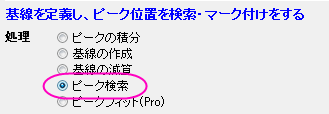
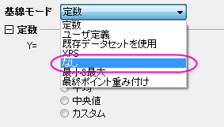
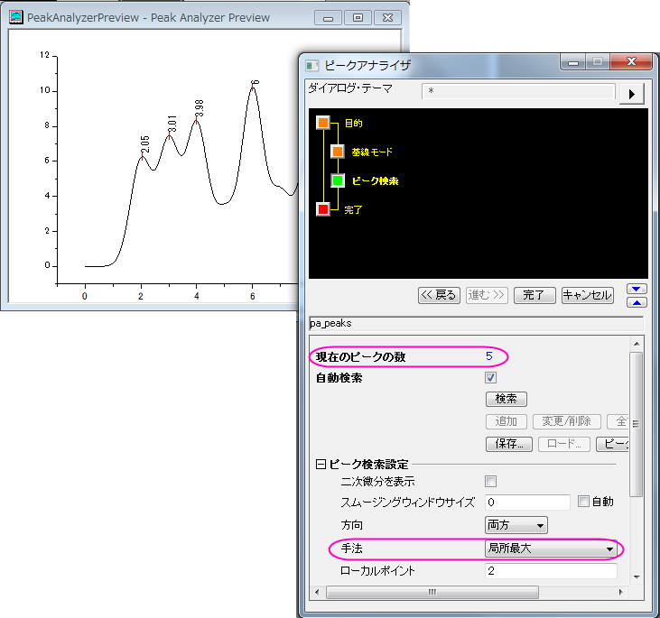
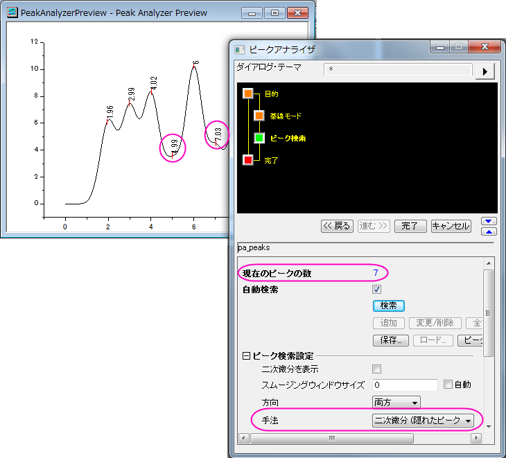
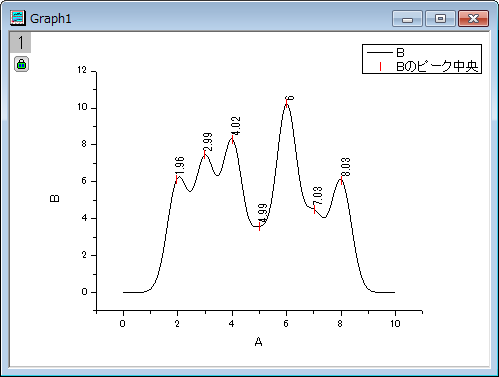

ピークの検出とマーキング
サマリー
ピークアナライザには、自動ピーク検出の方法がいくつかあります。また、ユーザは手動でピークを追加、削除、修正することができます。
ピークが検出されると、ピークの中心位置を示すため、ラベルがピークの中心に付加されます。
必要なOriginのバージョン:8.0 SR6
学習する項目
- ピークアナライザの自動ピーク検出の使用およびカスタマイズ方法
- ピークの中心のラベルをカスタマイズする方法
ステップ
- 新しいワークブックを開き、Samples\Spectroscopy\HiddenPeaks.datファイルをインポートします。
- 2列目を選択します。
- 「作図：線図：折れ線」を選択して、折れ線グラフを作成します。
- グラフをアクティブにして、解析：ピークと基線：ピークアナライザーを選択してピークアナライザのダイアログを開きます。
- 最初のページ(スタートページ)で、ゴールグループのピーク検出ラジオボタンを選択します。そして、「進む」ボタンをクリックして、次のページに移動します。
- 
- 「基線モード」ページで、「基線モード」ドロップダウンリストから「なし」を選びます。
- 
- 「進む」をクリックし、「ピーク検索」ページに移動します。
- 「ピーク検索」ページで
- 「ピーク検索設定」を開きます。「手法」で「局所最大」が選択されていることを確認します。そして、「検索」ボタンをクリックします。5つのピークが検査されます。
- 
- 「手法」を「二次微分(隠れたピークの検索)」に変更します。再度、「検索」ボタンをクリックします。今度は、7つのピークが検出されます。
- 
- 「完了」ボタンをクリックして分析を完了します。最終的に次のようなグラフになります。
- 